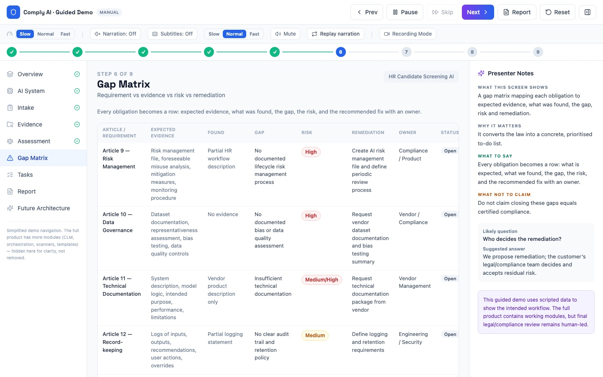
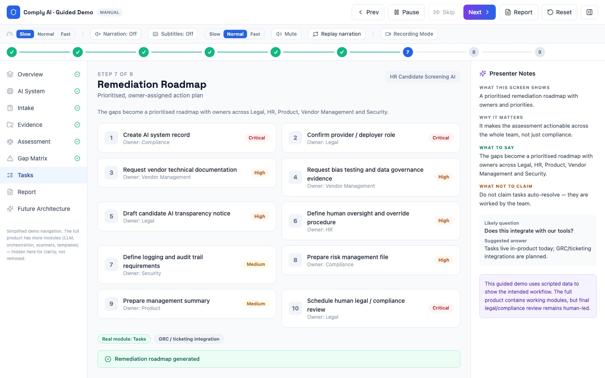
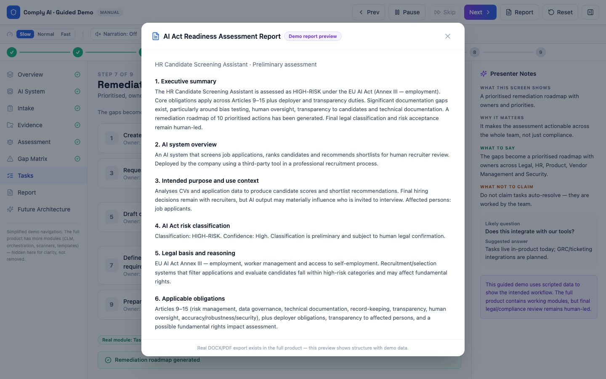
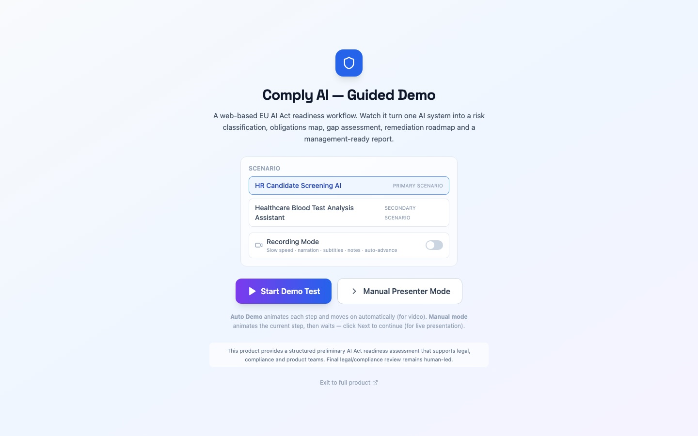

RoleFounder
StartedOct 2025
Codebase~54k lines
StageWorking prototype
Problem
Companies use AI they have never classified.
The AI Act is in force and fines reach €35M or 7% of worldwide turnover. Most companies have no inventory of their AI systems, cannot tell which fall under Annex III as high-risk, and do not know what evidence the law expects. Today that first pass is done by hand by consultants and lawyers, and it takes weeks.
Comply AI produces a structured first pass in minutes, so the legal or compliance team starts from an organised file. Final legal conclusions stay with a human reviewer.
Workflow
From a system description to a signed-off report.
- Register the systemPurpose, users, data, deployment context
- Structured intakeVague descriptions become legally relevant answers
- Collect evidenceWhat documents exist and what is missing
- Classify the riskProhibited, high, limited or minimal, with reasoning shown
- Gap matrixRequirement, evidence, gap, risk and fix in one row
- Remediation tasksPrioritised, with owners across Legal, HR and Product
- ReportExported to DOCX or PDF for leadership or an auditor
Screens
The demo, step by step.








Worked example
An HR screening tool, assessed.
CV screening and candidate ranking
HIGH-RISK- Legal basis
- Art. 6(2) with Annex III, point 4(a): AI used for recruitment and selection of candidates
- Role
- Deployer, using a third-party vendor's model
- Obligations
- Art. 9–15 requirements on the provider side, Art. 26 deployer duties, human oversight, informing affected workers
- Typical gaps
- No documented risk management, no bias testing evidence, no vendor technical documentation on file
- Output
- Gap matrix, 10 prioritised remediation tasks, exportable readiness report
Build
How it is built.
FrontendReact, Vite, Tailwind CSS, Recharts
BackendPython and FastAPI with about 20 domain routers: systems, evidence, assessments, remediation, templates, reports
DataMongoDB with workspaces and per-project records
AI layerMistral LLM reasons over intake answers and drafts report text
DocumentsDOCX and PDF report export
DeliveryWeb app, Electron desktop build, Docker Compose. This demo is a static React build.
Status
What is real today.
The product labels every capability, so nothing planned is presented as finished.
| Capability | Status |
|---|---|
| Web workflow, intake, classification, evidence and gap mapping, tasks | Working |
| LLM reasoning (Mistral), DOCX/PDF report export | Working |
| Document extraction, read-only GitHub connector | Partial |
| Public API, SDK, GRC integrations, continuous checks in CI/CD | Planned |
| Final legal classification and risk acceptance | Always human |
My role
What I did.
- Defined the product: the buyer, what they receive, and how the AI Act becomes a step-by-step workflow
- Translated legal requirements (risk tiers, Annex III use cases, provider and deployer duties) into data models and screens
- Built the full-stack application with AI-assisted development: React frontend, FastAPI backend, LLM integration, report export
- Designed the guided demo with presenter mode, narration and honesty labels for client and investor calls
- Wrote the go-to-market plan: a software-supported readiness assessment, priced per AI system or by subscription
See it run.
The demo plays the full HR scenario in about three minutes.